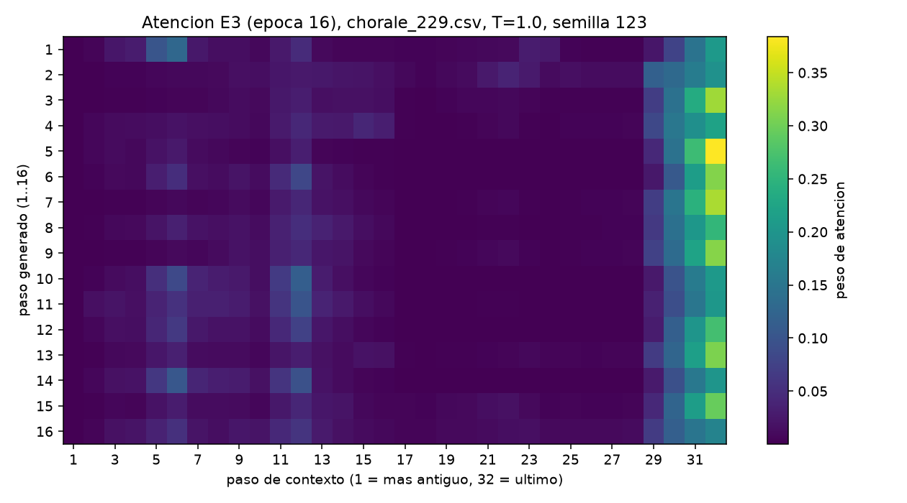

Reproductor de continuaciones de Bach
Modelo E4 (GRU, lr 2e-3), T=1.0, semilla 123, 120 bpm. Primeros 4 s: contexto real (32 pasos). Siguientes 4 s: continuación generada (32 pasos). Pulsa Reproducir.
Opcional: soltar otros archivos .mid aquí o hacer clic
Mapa de atención de E3
